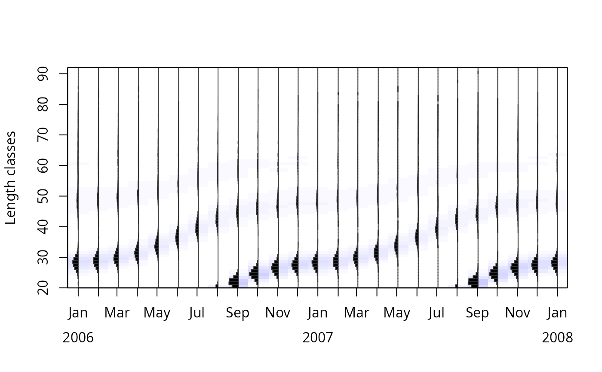
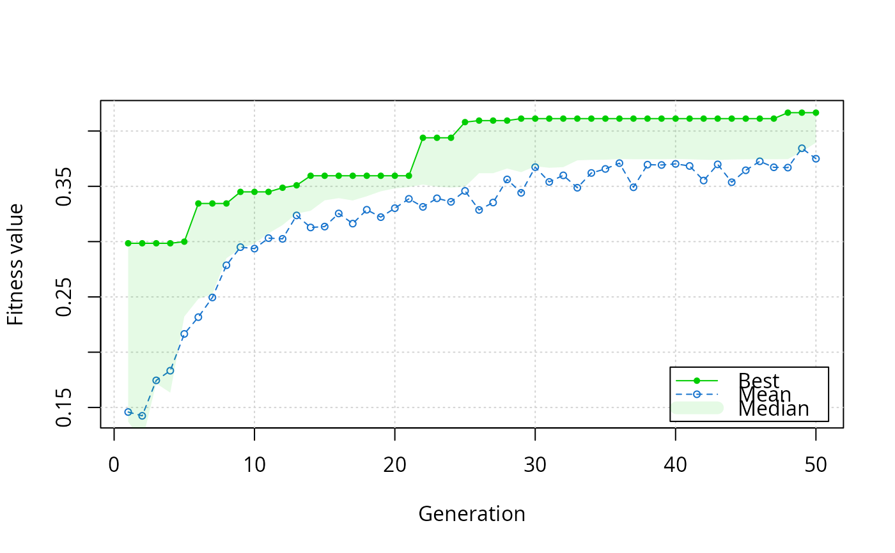
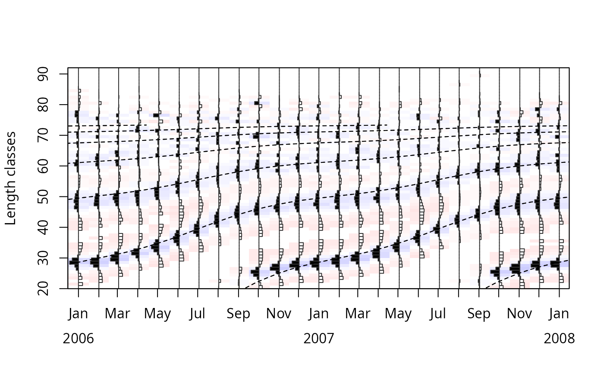
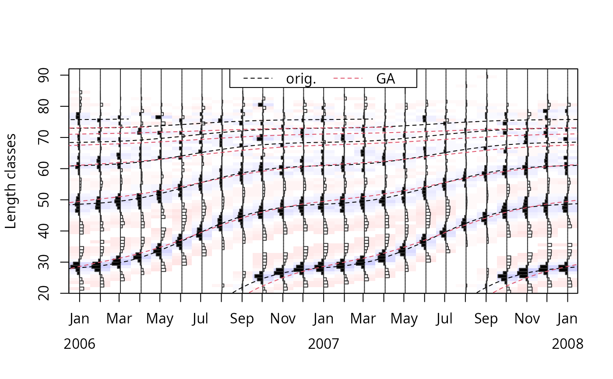

Electronic LEngth Frequency ANalysis with genetic algorithm used for estimating growth parameters.
Usage
ELEFAN_GA(
lfq,
seasonalised = FALSE,
low_par = NULL,
up_par = NULL,
popSize = 50,
maxiter = 100,
run = maxiter,
parallel = FALSE,
pmutation = 0.1,
pcrossover = 0.8,
elitism = base::max(1, round(popSize * 0.05)),
MA = 5,
addl.sqrt = FALSE,
agemax = NULL,
flagging.out = TRUE,
seed = NULL,
monitor = FALSE,
plot = FALSE,
plot.score = TRUE,
...
)Arguments
- lfq
a list consisting of following parameters:
midLengths midpoints of the length classes,
dates dates of sampling times (class Date),
catch matrix with catches/counts per length class (row) and sampling date (column);
- seasonalised
logical; indicating if the seasonalised von Bertalanffy growth function should be applied (default: FALSE).
- low_par
a list providing the minimum of the search space in case of real-valued or permutation encoded optimizations. When set to NULL the following default values are used:
Linf length infinity in cm (default is calculated from maximum length class in the data),
K curving coefficient (default: 0.01),
t_anchor time point anchoring growth curves in year-length coordinate system, corrsponds to peak spawning month (range: 0 to 1, default: 0),
C amplitude of growth oscillation (range: 0 to 1, default: 0),
ts summer point (ts = WP - 0.5) (range: 0 to 1, default: 0);
- up_par
a list providing the maximum of the search space in case of real-valued or permutation encoded optimizations. When set to NULL the following default values are used:
Linf length infinity in cm (default is calculated from maximum length class in the data),
K curving coefficient (default: 1),
t_anchor time point anchoring growth curves in year-length coordinate system, corrsponds to peak spawning month (range: 0 to 1, default: 1),
C amplitude of growth oscillation (range: 0 to 1, default: 1),
ts summer point (ts = WP - 0.5) (range: 0 to 1, default: 1);
- popSize
the population size. Default: 50
- maxiter
the maximum number of iterations to run before the GA search is halted. default:100
- run
the number of consecutive generations without any improvement in the best fitness value before the GA is stopped. Default: equals maxiter
- parallel
a logical argument specifying if parallel computing should be used (TRUE) or not (FALSE, default) for evaluating the fitness function. See
gafor details. Default:FALSE, but setting to TRUE may substantially improve required calculation time. Use of this functionality requires the following packages: parallel, doParallel.- pmutation
the probability of mutation in a parent chromosome. Usually mutation occurs with a small probability, and by default is set to 0.1.
- pcrossover
the probability of crossover between pairs of chromosomes. Typically this is a large value and by default is set to 0.8.
- elitism
the number of best fitness individuals to survive at each generation. By default the top 5% individuals will survive at each iteration.
- MA
number indicating over how many length classes the moving average should be performed (default: 5, for more information see lfqRestructure)
- addl.sqrt
additional squareroot transformation of positive values according to Brey et al. (1988) (default: FALSE, for more information see lfqRestructure)
- agemax
maximum age of species; default NULL, then estimated from Linf
- flagging.out
logical; should positive peaks be flagged out? Original setting of ELEFAN in TRUE. Default:TRUE
- seed
an integer value containing the random number generator state. This argument can be used to replicate the results of a GA search. Note that if parallel computing is required, the doRNG package must be installed. (Default: 'seed = NULL')
- monitor
a logical or an R function which takes as input the current state of the 'ga-class' object and show the evolution of the search. By default, 'monitor = FALSE' so any output is suppressed. Possible also, the functions 'gaMonitor' or 'gaMonitor2' (depending on whether or not is an RStudio session) which print the average and best fitness values at each iteration. If set to 'plot' these information are plotted on a graphical device. Other functions can be written by the user and supplied as argument.
- plot
logical; Plot restructured counts with fitted lines using
plot.lfqandlfqFitCurves(default : FALSE).- plot.score
logical; Plot genetic algorithm fitness progression. (Default: plot.score=TRUE).
- ...
additional parameters to pass to
ga
Value
A list with the input parameters and following list objects:
samplingPeriod: length of sampling period in years,
samplingDays: time of sampling times in relation to first sampling time,
delta_t: array with time differences between relative sampling time set to zero and other sampling times,
rcounts: restructured frequencies,
peaks_mat: matrix with positive peaks with distinct values,
ASP: available sum of peaks, sum of posititve peaks which could be potential be hit by growth curves,
ncohort: maximum age of species,
agemax: maximum age of species,
par: a list with the parameters of the von Bertalanffy growth function:
Linf: length infinity in cm,
K: curving coefficient;
t_anchor: time point anchoring growth curves in year-length coordinate system, corrsponds to peak spawning month,
C: amplitude of growth oscillation (if
seasonalised= TRUE),ts: summer point of oscillation (ts = WP - 0.5) (if
seasonalised= TRUE),phiL: growth performance index defined as phiL = log10(K) + 2 * log10(Linf);
Rn_max: highest value of fitness function, (comparable with ELEFAN and ELEFAN_SA).
Details
A more detailed description of the generic algorithm (GA) can be found in
Scrucca (2013). The score value fitnessValue is not comparable with
the score value of the other ELEFAN functions (ELEFAN or
ELEFAN_SA).
References
Brey, T., Soriano, M., and Pauly, D. 1988. Electronic length frequency analysis: a revised and expanded user's guide to ELEFAN 0, 1 and 2.
Pauly, D. and N. David, 1981. ELEFAN I, a BASIC program for the objective extraction of growth parameters from length-frequency data. Meeresforschung, 28(4):205-211
Scrucca, L. (2013). GA: a package for genetic algorithms in R. Journal of Statistical Software, 53(4), 1-37.
Examples
# \donttest{
# load data and view catch length frequencies
data(synLFQ4)
plot(synLFQ4, Fname="catch")

# Genetic algorithm
# (if using a multicore processor,
# consider adding the argument 'parallel=TRUE'
# to reduce computation time)
output <- ELEFAN_GA(synLFQ4, seasonalised = TRUE,
low_par = list(Linf = 70, K = 0.25, t_anchor = 0, C = 0, ts= 0),
up_par = list(Linf = 90, K = 0.7, t_anchor = 1, C = 1, ts = 1),
popSize = 40, maxiter = 50, run = 20,
MA = 11, plot = TRUE, seed = 1111)
#> Genetic algorithm is running. This might take some time.


output$par
#> $Linf
#> [1] 75.54128
#>
#> $K
#> [1] 0.5891195
#>
#> $t_anchor
#> [1] 0.2841769
#>
#> $C
#> [1] 0.4226396
#>
#> $ts
#> [1] 0.5623804
#>
#> $phiL
#> [1] 3.526572
#>
output$ASP
#> [1] 113.0432
output$Rn_max
#> [1] 0.4166138
# compare fitness score (fESP) to
# that calculated with "true" growth parameter values
plot(output, draw = FALSE)
lfqFitCurves(output, par=list(Linf=80, K=0.5, t_anchor=0.25, C=0.75, ts=0.5),
draw = TRUE, col=1, flagging.out = FALSE)$fESP
#> [1] 0.4507375
lfqFitCurves(output, par=output$par, draw = TRUE, col=2, flagging.out = FALSE)$fESP
#> [1] 0.4103636
legend("top", legend=c("orig.", "GA"), lty=2, col=1:2, ncol=2)

# }